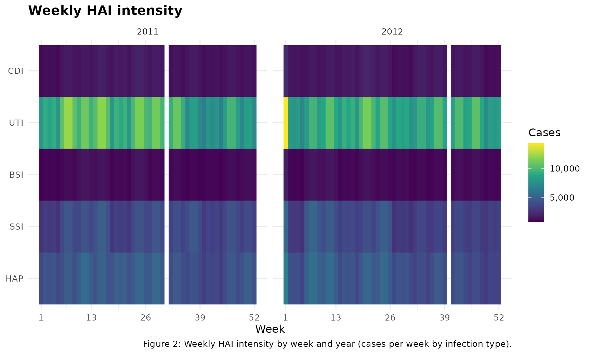
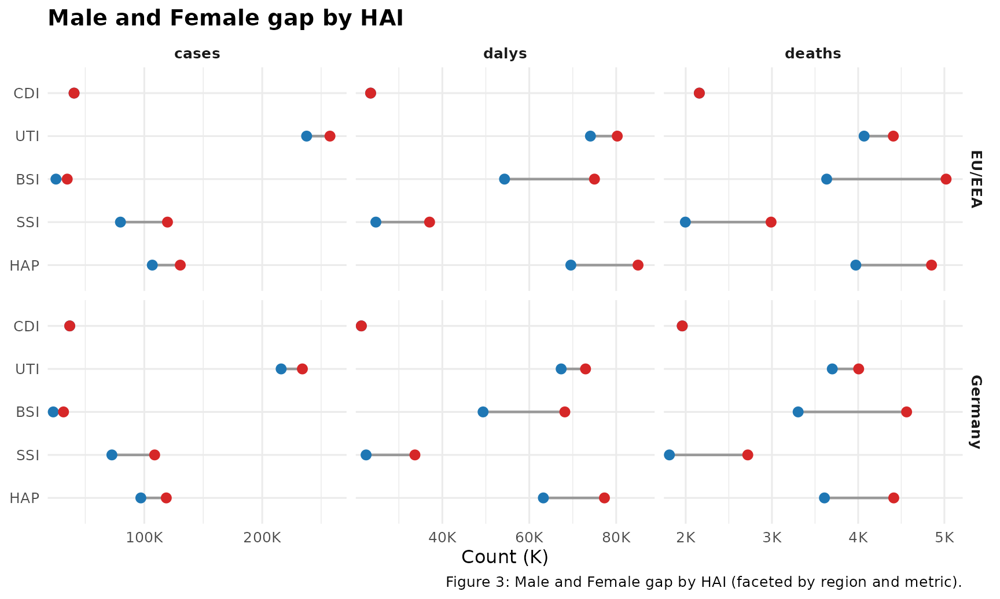
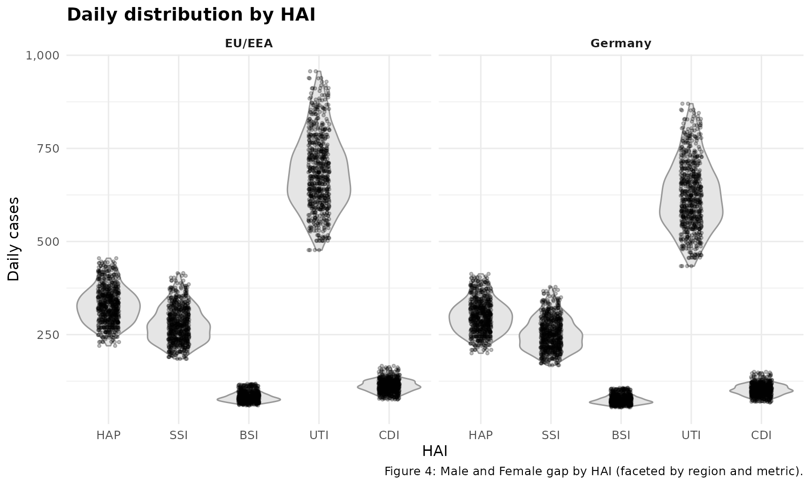

Purposes
This vignette presents examples of analysis achievable with the package. The visualisations include interactive and faceted views of Germany HAI simulations (2011 – 2012) to assess trends, burden composition, distribution, and gender or regional differences across infection types. Each chart maintains consistent colour schemes so changes in cases, deaths, and DALYs can be easily compared over time, HAI categories, sex, and regions.
Monthly Composition with Total Overlay (Animated)
monthly_long <- sim_monthly |>
mutate(frame = format(as.Date(date), "%b %Y")) |>
group_by(frame, hai) |>
summarise(cases = sum(cases_month), .groups = "drop")
p <- plot_ly(
monthly_long,
x = ~hai,
y = ~cases,
frame = ~frame,
type = "bar",
color = ~hai,
hovertemplate = "<b>%{frame}</b><br>%{x}: %{y:,.0f} cases<extra></extra>"
) |>
layout(
barmode = "stack",
xaxis = list(title = ""),
yaxis = list(title = "Cases (monthly)"),
title = list(text = "Monthly HAI Composition", x = 0, xanchor = "left"),
margin = list(b = 110), #space for the caption
annotations = list(
list(
text = "Figure 1: Stacked Monthly Totals by HAI.",
xref = "paper", yref = "paper", x = 0, y = -0.20,
showarrow = FALSE, align = "left"
)
)
) |>
#plotly animation helpers
animation_opts(frame = 800, transition = 0, redraw = FALSE) |>
animation_slider(currentvalue = list(prefix = "Month: ")) |>
animation_button(x = 1, xanchor = "right", y = 1.15)
pAs shown in Figure 1, the monthly HAI composition clearly demonstrates a persistent dominance of UTI, which represents the largest monthly burden throughout the entire observation period. HAP and SSI are the next largest contributors, while BSI and CDI remain consistently lower but stable, indicating limited variability from month to month. The animation emphasises a recurring seasonal pattern, with all infection categories increasing during mid-year periods and decreasing toward the end of each cycle.
Weekly Intensity by HAI (Heatmap Faceted Yearly)
wk <- sim_weekly |>
mutate(yr = year(as.Date(date)), week = iso_week) |>
group_by(yr, week, hai) |>
summarise(cases = sum(cases_week), .groups = "drop")
ggplot(wk, aes(x = week, y = hai, fill = cases)) +
geom_tile() +
scale_fill_viridis_c(label = scales::label_comma(), name = "Cases") +
scale_x_continuous(breaks = c(1, 13, 26, 39, 52)) +
labs(x = "Week", y = NULL, title = "Weekly HAI intensity",
caption = "Figure 2: Weekly HAI intensity by week and year (cases per week by infection type).") +
facet_wrap(~ yr, ncol = 2, scales = "free_x") +
theme_minimal(base_size = 12) +
theme(legend.position = "right", plot.title = element_text(face = "bold"))
According to Figure 2, UTI exhibits the strongest weekly intensity across both years, with broad mid-year periods indicating consistently higher activity compared to other HAIs. HAP and SSI show moderate, stable levels, while BSI and CDI remain consistently low with limited weekly fluctuations. A notable feature is the sharp UTI spike at week 1 of 2012, visible as the brightest cell, followed by a return to the usual seasonal pattern.
Faceted Gap Analysis (Dumbbell Chart)
# Male and Female gap by HAI, split by region
sex_agg <- sim_monthly |>
group_by(region, hai, sex) |>
summarise(
cases = sum(cases_month),
deaths = sum(deaths_month),
dalys = sum(dalys_month),
.groups = "drop"
) |>
tidyr::pivot_longer(
c(cases, deaths, dalys),
names_to = "metric", values_to = "value"
) |>
tidyr::pivot_wider(names_from = sex, values_from = value) |>
filter(!is.na(Female), !is.na(Male))
ggplot(sex_agg, aes(x = Female, xend = Male, y = hai)) +
geom_segment(linewidth = 0.8, aes(yend = hai), colour = "grey60") +
geom_point(size = 2.6, colour = "#1f77b4") + # Female
geom_point(aes(x = Male), size = 2.6, colour = "#d62728") + # Male
scale_x_continuous(
labels = scales::label_number(scale = 1e-3, suffix = "K"),
expand = expansion(mult = c(0.02, 0.06))
) +
labs(
x = "Count (K)",
y = NULL,
title = "Male and Female gap by HAI",
caption = "Figure 3: Male and Female gap by HAI (faceted by region and metric)."
) +
facet_grid(region ~ metric, scales = "free_x") +
theme_minimal(base_size = 12) +
theme(
plot.title = element_text(face = "bold"),
strip.text = element_text(face = "bold")
)
According to Figure 3, male counts surpass female counts across most HAI categories and metrics in both regions, with the gap most marked for UTI and BSI, indicating a consistently higher burden among male patients. The EU/EEA shows wider male and female differences in deaths for BSI and SSI, while Germany exhibits clearer divergence in DALYs for HAP and BSI, suggesting variation in severity profiles between regions. CDI remains the smallest contributor in both sexes and regions, yet it maintains a stable pattern with minimal sex disparity, highlighting its comparatively lower overall impact.
Daily Distribution HAI (Violin and Jitter Chart)
daily_region <- sim_daily |>
group_by(date, hai, region) |>
summarise(cases = sum(cases_day), .groups = "drop")
ggplot(daily_region, aes(x = hai, y = cases)) +
geom_violin(fill = "grey90", colour = "grey60", scale = "width", trim = TRUE) +
geom_jitter(width = 0.15, height = 0, alpha = 0.25, size = 0.9) +
scale_y_continuous(labels = scales::label_comma()) +
labs(x = "HAI", y = "Daily cases", title = "Daily distribution by HAI",
caption = "Figure 4: Male and Female gap by HAI (faceted by region and metric).") +
facet_wrap(~ region) +
theme_minimal(base_size = 12) +
theme(plot.title = element_text(face = "bold"),
strip.text = element_text(face = "bold"))
According to Figure 4, daily case distributions reveal that UTI is the most significant burden among HAIS in both the EU/EEA and Germany, with consistently higher medians and notably wider variation, indicating both larger volumes and greater variability from day to day. HAP and SSI show moderate yet stable daily ranges, while BSI and CDI remain closely clustered with low dispersion, reflecting smaller and more predictable daily burdens. Notably, the EU/EEA exhibits a slightly broader distribution for UTI compared with Germany, suggesting marginally higher volatility in daily case counts at the regional level.